Tambaú
A praia mais movimentada da cidade, com calçadão, bares e o Hotel Tambaú, famoso pelo formato circular.
 João PessoaParaíba
João PessoaParaíba
A praia mais movimentada da cidade, com calçadão, bares e o Hotel Tambaú, famoso pelo formato circular.
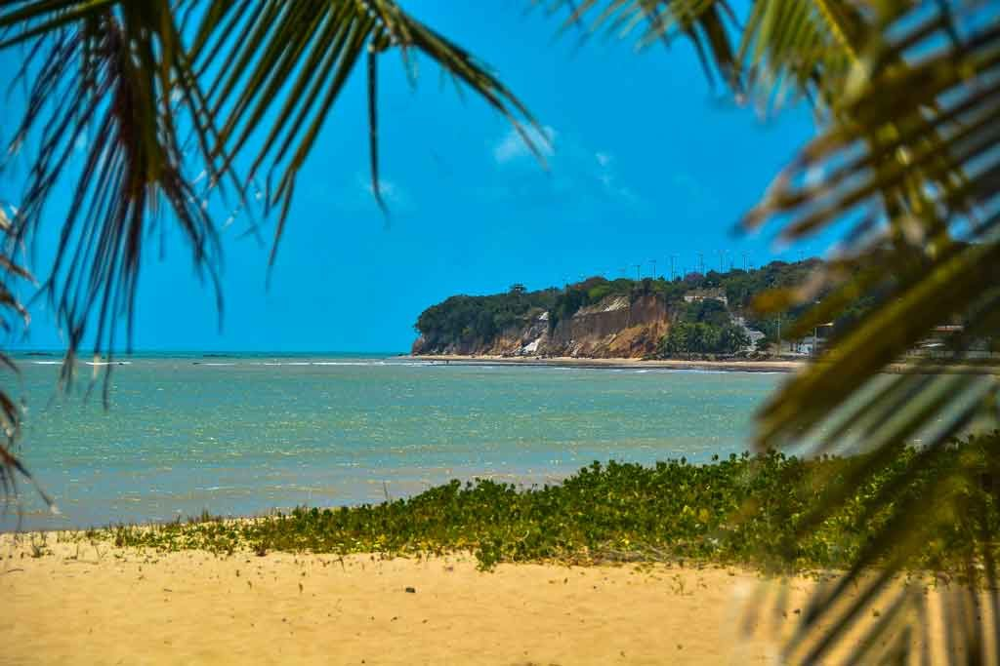
Conhecida pelas falésias avermelhadas ao fundo e pelo mar de ondas mais fortes, bom para caminhar na orla.
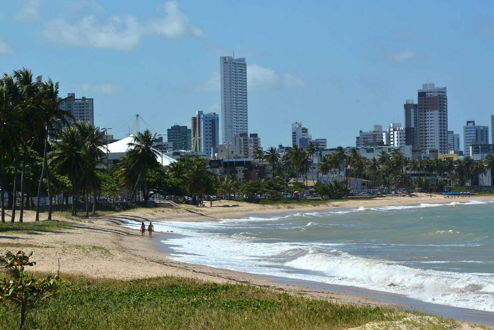
Mais tranquila e familiar, com faixa de areia larga e coqueiros, ao norte de Tambaú.
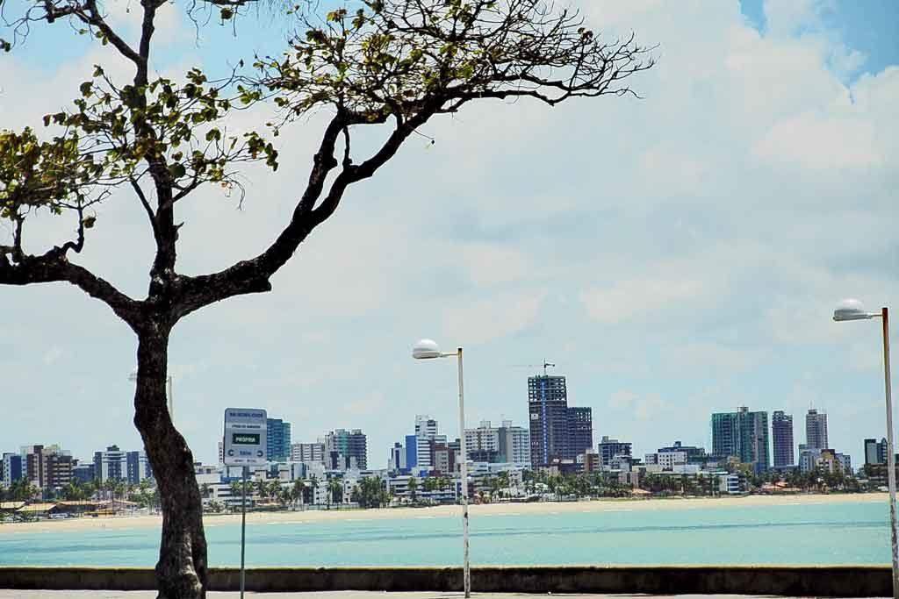
Orla com calçadão, prédios e mar de cor verde-clara, vizinha de Tambaú.
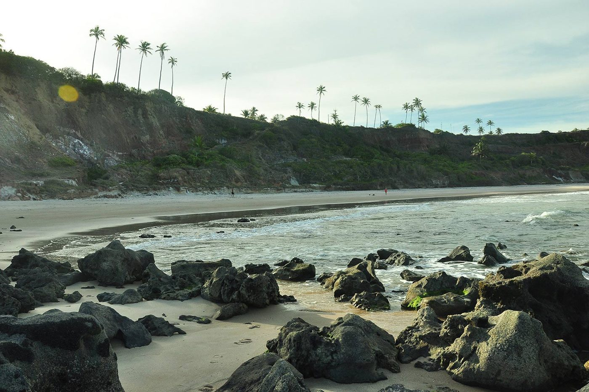
Praia ao sul da cidade, com falésias, rochas e coqueiros. Tem clima mais tranquilo.
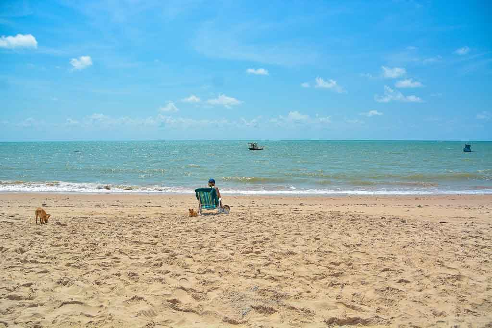
Praia de mar aberto e areia larga, perto da Ponta do Seixas. Tem pouco movimento e muitos barcos de pesca ao longe.
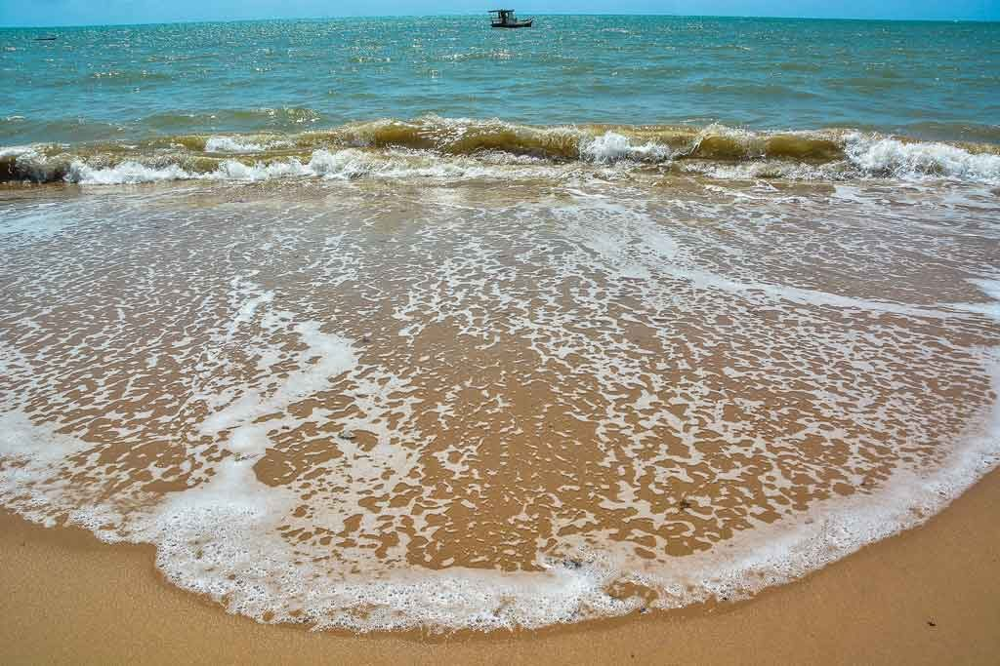
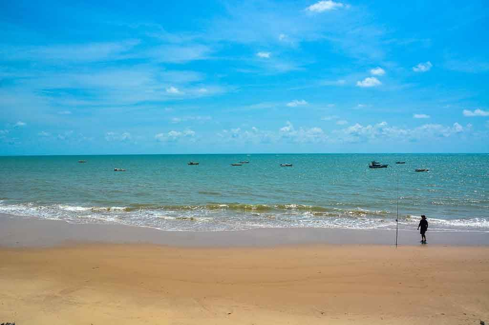
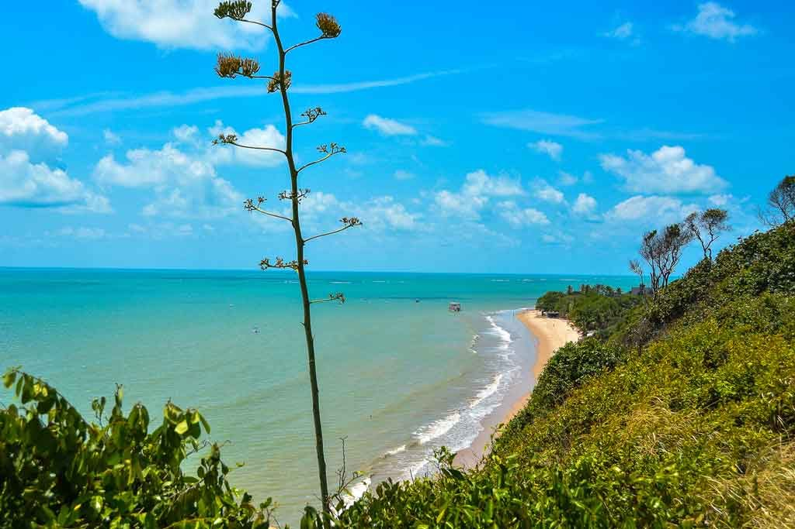
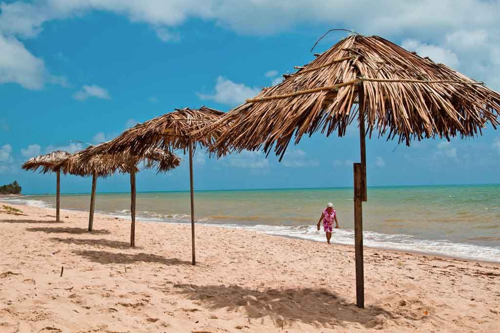
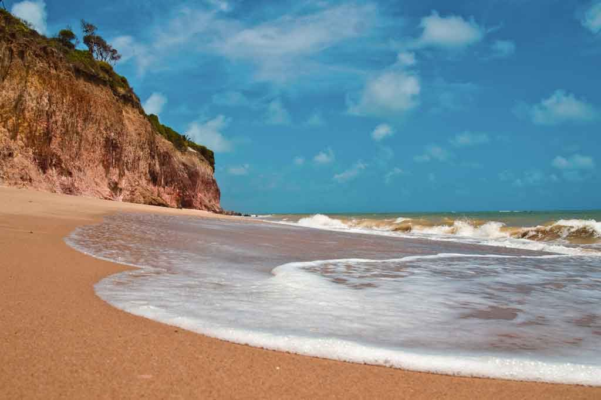
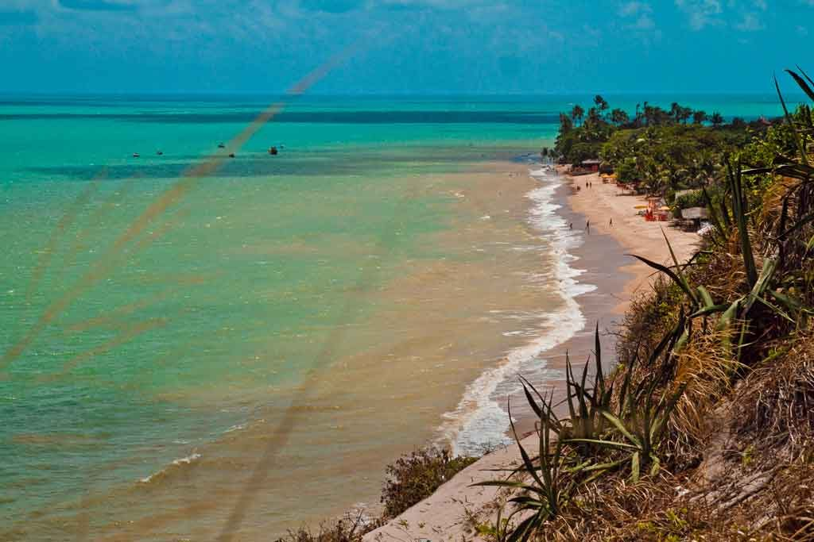
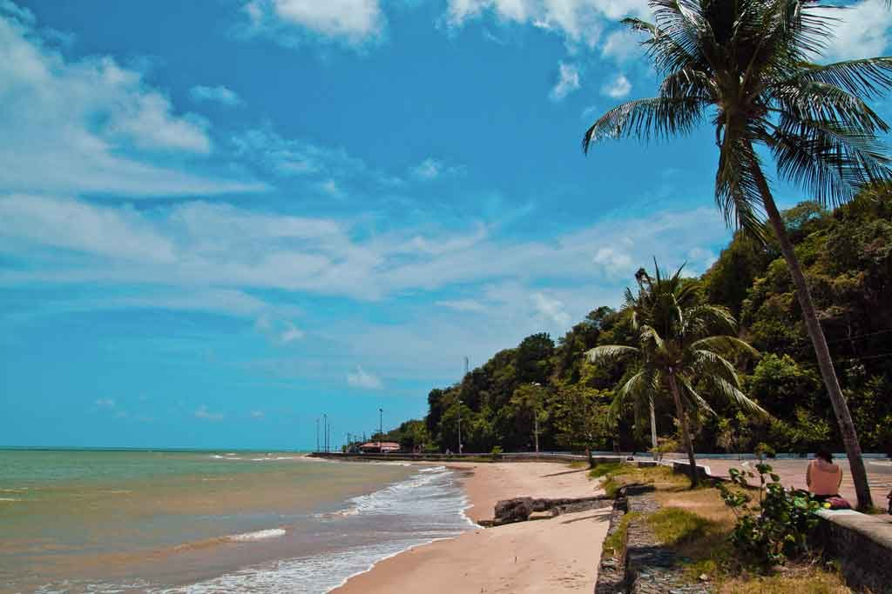
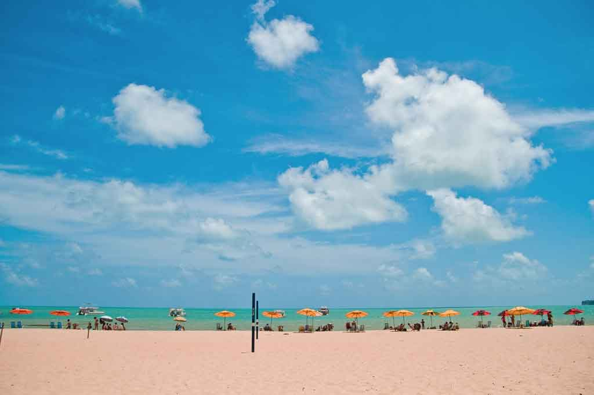